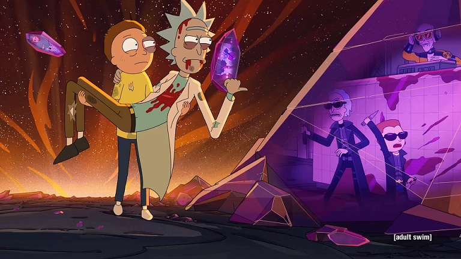

Rick and Morty is an American adult animated science-fiction sitcom created by Justin Roiland and Dan Harmon for Cartoon Network's nighttime programming block Adult Swim. The series follows the misadventures of cynical mad scientist Rick Sanchez and his good-hearted but fretful grandson Morty Smith, who split their time between domestic life and interdimensional adventures.
